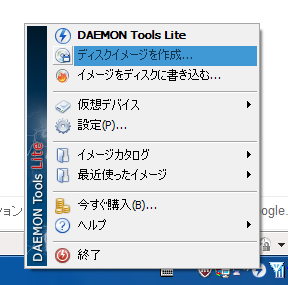
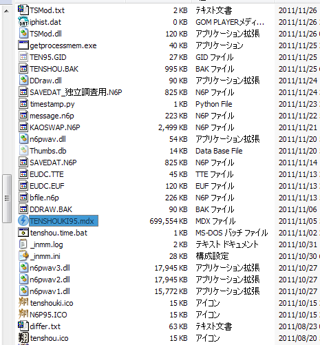
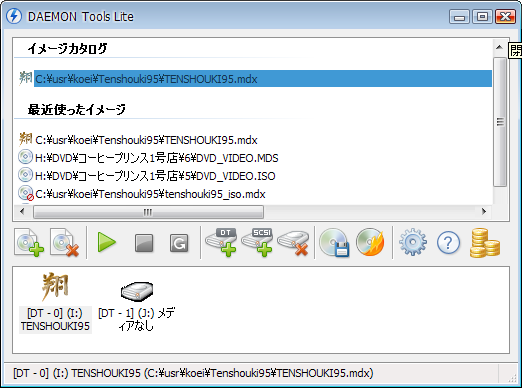

Daemon Tools Lite を使って実現します。
Daemon Tools Lite 以外にもディスクイメージを作成出来るものはありますが、Daemon Tools Lite は最もメジャーなものと言えるでしょう。
Daemon Tools Lite の常駐アイコンを右クリックしてメニューを出し、｢ディスクイメージの作成」にてmdxファイルを作成します。

ドライブとして、｢天翔記のCDが入っているドライブ｣を選択し、 ｢開始｣ボタンを押すと、やがて、650Mほどの******.mdxというファイルが作成されるはずです。
このイメージファイルが、｢天翔記のCDの代わり｣を完全に務めてくれます。
この.mdxファイルは好きな位置に移動できます。
天翔記をインストールしたフォルダなどに移動させるのが良いでしょう。

このイメージファイルをダブルクリックし、マウントさせれば、完成です。
